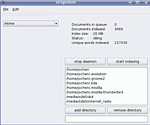

Strigi
Archivierte Anleitung
Dieser Artikel wurde archiviert, da er - oder Teile daraus - nur noch unter einer älteren Ubuntu-Version nutzbar ist. Diese Anleitung wird vom Wiki-Team weder auf Richtigkeit überprüft noch anderweitig gepflegt. Zusätzlich wurde der Artikel für weitere Änderungen gesperrt.
Anmerkung: Strigi existiert noch, hat aber keine eigene Benutzeroberfläche mehr, sondern wird als Suchbibliothek im Hintergrund verwendet
Zum Verständnis dieses Artikels sind folgende Seiten hilfreich:
Strigi  ist eine kleine und schnelle Desktop-Suche für den KDE-Desktop, ähnlich Beagle oder Tracker für GNOME oder der Google Desktop Suche. Ab KDE 4 ist Strigi ein Kernbestandteil von KDE, ab Gutsy Gibbon ist Strigi unter Kubuntu standardmäßig installiert. Strigi ist zwar Bestandteil von KDE(4), ist aber grundsätzlich plattform-unabhängig, d.h. weist keine besonderen Abhängigkeiten von KDE-Bibliotheken auf. So ist es z.B. möglich, auch unter GNOME / Xfce Catfish in Kombination mit Strigi zu nutzen.
ist eine kleine und schnelle Desktop-Suche für den KDE-Desktop, ähnlich Beagle oder Tracker für GNOME oder der Google Desktop Suche. Ab KDE 4 ist Strigi ein Kernbestandteil von KDE, ab Gutsy Gibbon ist Strigi unter Kubuntu standardmäßig installiert. Strigi ist zwar Bestandteil von KDE(4), ist aber grundsätzlich plattform-unabhängig, d.h. weist keine besonderen Abhängigkeiten von KDE-Bibliotheken auf. So ist es z.B. möglich, auch unter GNOME / Xfce Catfish in Kombination mit Strigi zu nutzen.
Aktuell unterstützt bzw. indiziert Strigi folgende Dateitypen:
OpenOffice Textdokumente, Tabellenblätter und Präsentationen
Textdateien
mp3-Dateien
pdf-Dateien
deb-Pakete
rpm-Pakete
Archive
Installation¶
Wie oben bereits erwähnt ist Strigi bei Kubuntu mit KDE4 in der Standardinstallation enthalten, kann ansonsten aber über die Pakete
strigi-daemon
strigi-client (bis Hardy in universe, [2])
installieren werden [1].
Bis einschließlich Hardy besteht auch die Möglichkeit, das Strigi Applet zu nutzen.
Benutzung¶
Der Strigi-Daemon ist das Backend von Strigi und kann über verschiedene Frontends bedient werden, hierbei stehen das Strigi-Applet für den KDE-Desktop und der Strigi-Client als reine QT-Anwendung zur Verfügung.
Strigi-Client¶
| Strigi-Client | |
|  | |
| Suchmaske und Index | Ergebnisdarstellung |
Der Client wird über den Aufruf von strigiclient gestartet [3], worauf zuerst der Strigi-Daemon mit einem Klick auf "start daemon" gestartet wird und anschließend die Indizierung über "start indexing" vorgenommen werden kann.
Möchte man weitere Verzeichnisse indizieren lassen, so klickt man auf "add directory" und wählt das entsprechenden Verzeichnis aus. Über "remove directory" kann man Verzeichnisse von der Indizierung ausschließen.
Weiterhin bietet der Stigi-Client die Möglichkeit, bestimmte Dateitypen von der Indizierung auszuschließen. Dazu wählt man "Edit -> Edit Filters" und kann entsprechende Filterregeln anlegen. Man kann die Reihenfolge der Filterregeln hier auch ändern. Über den Menüpunkt "Edit -> List indexed files" kann man sehen, welche Dateien im Index enthalten sind.
Alternativ kann Strigi auch über die Datei ~/.strigi.daemon.conf konfiguriert werden. Dies bietet aber keine Vorteil gegenüber der graphischen Konfiguration. Die Datei ist recht simple aufgebaut, der Inhalt quasi selbsterklärend.
Möchte man nun den Index durchsuchen, so gibt man den gewünschten Suchbegriff in die Zeile im unteren Bereich des Fensters ein. Die Treffer werden nun alle angezeigt, wobei der Name des Dokuments und die Fundstelle angezeigt werden. Der Name des Dokuments ist als Link aufgeführt, d.h. er kann angeklickt werden und man bekommt das Dokument mit dem entsprechenden Programm (Editor, OpenOffice...) angezeigt. Löscht man den Suchbegriff, so gelangt man wieder zur Anfangsübersicht.
Index löschen¶
Möchte man - aus welchem Grund auch immer - den Index komplett löschen, so muss man dies von Hand machen. Dazu wechselt man ins Verzeichnis ~/.strigi/clucene und löscht dort alle Dateien. Danach kann man einen neuen Index erstellen.
Strigi und Nepomuk¶
Ab Kubuntu 8.10 Intrepid Ibex kann man Strigi auch in Kombination mit Nepomuk zu nutzen. Nepomuk ist eine semantische Suche für den KDE-Desktop, welche mit KDE 4.2 (also KUbuntu 9.04 Jaunty) noch besser mit Strigi zusammenarbeiten soll.
Über die Nepomuk-Einstellungen kann Strigi ab KDE 4.1 (de-)aktiviert werden. Dazu wählt man "Systemeinstellungen -> Erweitert -> Desktopsuche". Unter "Grundeinstellungen" kann man Strigi über die Auswahlbox "Strigi-Datei-Indexer aktivieren" Strigi an- und abschalten, unter "Erweitere Einstellungen" kann man die zu indizierenden Verzeichnisse und auszuschließenden Dateien festlegen.
Falls dort bei "Strigi-Datei-Indexer" eine Fehlermeldung der Art "Der Strigi-Dienst kann nicht initialisiert werden - wahrscheinlich liegt ein Installationsproblem vor." auftritt, kann man mit dem Befehl
Für 32 Bit Systeme:
sudo ln -s /usr/lib/jvm/java-6-openjdk/jre/lib/i386/server/libjvm.so /usr/lib/libjvm.so
Für 64 Bit Systeme:
sudo ln -s /usr/lib/jvm/java-6-openjdk/jre/lib/amd64/server/libjvm.so /usr/lib/libjvm.so
dieses Problem beseitigen. Dabei sollte man darauf achten, dass Strigi deaktiviert ist. Danach wieder anschalten und die Suche funktioniert Danke für diesen Tipp an Rando in diesem Post http://forum.ubuntuusers.de/topic/jaunty-status-desktopsuche-nepomuk-strigi/
Strigi-Applet¶
Das Strigi-Applet ist nur bis einschließlich Hardy Heron in den Ubuntu-Quellen. Es lässt sich über das Paket
strigi-applet (universe [2])
installieren.
| Strigi-Applet | |
| Index | Ergebnisdarstellung |
Das Strigi-Applet ist für den KDE-Desktop gedacht. Es öffnet sich der Konqueror mit der Oberfläche für Strigi. Unter Gutsy startet man Strigi über"K-Menü -> Strigi Arbeitsbereich Suche", unter Feisty über "K-Menü -> Dienstprogramme -> Strigi".
Als erstes muss ein Index erstellt werden. Dazu klickt man auf "status" und dann auf "Start daemon", anschließend auf "Start indexing". Jetzt wird der Index erstellt, wobei die Anzahl der indizierten Dateien, die Größe des Indexes und weitere Angaben ausgegeben werden. Standardmäßig durchsucht Strigi das Homeverzeichnis sowie einige Verzeichnisse darunter. Möchte man weitere Verzeichnisse in den Index einbeziehen, so klickt man auf "preferences". Dort kann man weitere zu indizierende Verzeichnisse hinzufügen.
Möchte man nun nach einer Datei bzw. einem bestimmten Inhalt suchen, so klickt man auf "search" und gibt in das Suchfenster den gewünschten Suchbegriff ein und klickt auf den "Search"-Knopf. Kurze Zeit später erscheinen die Treffer in einer übersichtlichen Liste. Gezeigt werden eine Mini-Vorschau der Datei und der Fundstelle, welche über einen Klick auf den Titel direkt angesprungen werden kann. Die Datei wird dann im passenden Programm (z.B. Editor, Audioplayer etc.) direkt geöffnet.
Klickt man mit Links auf das Icon, so kann man einen Suchbegriff eingeben, nach einem Rechtsklick auf das Icon stehen verschiedene Konfigurationsmöglichkeiten zur Verfügung.
Links¶
Strigi bei SF - das Strigi Wiki
- Erstellt mit Inyoka
-
 2004 – 2017 ubuntuusers.de • Einige Rechte vorbehalten
2004 – 2017 ubuntuusers.de • Einige Rechte vorbehalten
Lizenz • Kontakt • Datenschutz • Impressum • Serverstatus -
Serverhousing gespendet von